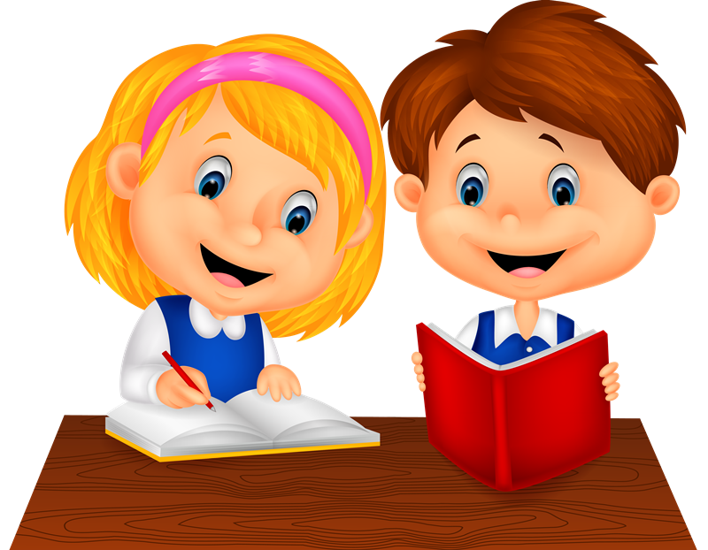

EN EQUIPOS

Con base en el texto, responderán las siguientes preguntas:
¿Qué compuestos químicos se encuentran en la chirimoya y por qué es importante este
alimento?
- ¿En qué otro vegetal o animal encontramos el fósforo?
- ¿Qué sucedería con nuestro cuerpo si no consumiéramos vitaminas y proteínas?
- ¿Qué significa que la chirimoya tenga capacidad citotóxica?